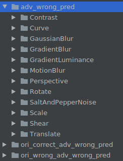

Evaluating the Robustness of the OCR Model CNN-CTC

Overview
This tutorial uses natural perturbation serving to evaluate the robustness of the OCR model, CNN-CTC. Multiple natural perturbation sample datasets are generated based on serving, and then the robustness of the CNN-CTC model is evaluated based on the model performance on the natural perturbation sample datasets.
You can obtain the complete executable sample code at https://gitee.com/mindspore/mindarmour/tree/r2.0/examples/natural_robustness/ocr_evaluate.
Environment Requirements
Hardware
Prepare the Ascend/GPU processor to set up the hardware environment.
Dependencies
MindSpore Serving 1.6.0 or later
MindArmour
Script Description
Code Structure
|-- natural_robustness
|-- serving # Serving for generating natural perturbation samples.
|-- ocr_evaluate
|-- cnn_ctc # Directory for model training, inference, pre-processing, and post-processing.
|-- data # Experiment analysis data.
|-- default_config.yaml # Parameter configuration.
|-- generate_adv_samples.py # Script for generating natural perturbation samples.
|-- eval_and_save.py # Script for CNN-CTC to perform inference on the perturbation sample and save the inference result.
|-- analyse.py # Script for analyzing the robustness of the CNN-CTC model.
Script Parameters
You can configure training parameters, inference parameters, and robustness evaluation parameters in default_config.yaml. We focus on the parameters used in the evaluation and the parameters that need to be configured by users. For details about other parameters, see the CNN-CTC Tutorial.
--TEST_DATASET_PATH: indicates the path of the test dataset.--CHECKPOINT_PATH: indicates the checkpoint path.--ADV_TEST_DATASET_PATH: indicates the path of the perturbation sample dataset.--IS_ADV: specifies whether to use the perturbation sample for the test.
Model and Data
The model to be evaluated is the CNN-CTC model implemented based on MindSpore. This model is mainly used for scene text recognition tasks. It uses a CNN model to extract features and uses the connectionist temporal classification (CTC) to predict the output sequence.
Paper: J. Baek, G. Kim, J. Lee, S. Park, D. Han, S. Yun, S. J. Oh, and H. Lee, “What is wrong with scene text recognition model comparisons? dataset and model analysis,” ArXiv, vol. abs/1904.01906, 2019.
For details about data processing and model training, see the CNN-CTC Tutorial. You need to obtain the preprocessed dataset and checkpoint model file based on this tutorial for the following evaluation task.
The preprocessed dataset is in .lmdb format and stored in key-value pairs.
label- %09d: actual image label
image- %09d: original image data
num-samples: number of samples in the LMDB dataset
In the preceding information, %09d indicates a string of 9 digits. Example: label-000000001.
Generating an Evaluation Dataset based on Natural Perturbation Serving
Start the serving server for generating natural perturbation samples. For details, see Generating Natural Perturbation Samples Based on the Serving Server.
cd serving/server/ python serving_server.py
Generate an evaluation dataset based on the serving server.
In
default_config.yaml, configure the original test sample data pathTEST_DATASET_PATHand the path to store the generated perturbation sample datasetADV_TEST_DATASET_PATH. Example:TEST_DATASET_PATH: "/opt/dataset/CNNCTC_data/MJ-ST-IIIT/IIIT5k_3000" ADV_TEST_DATASET_PATH: "/home/mindarmour/examples/natural_robustness/ocr_evaluate/data"
The core code is described as follows:
Configure the perturbation method. For details about the available perturbation methods and parameter configurations, see transform/image. The following is a configuration example.
PerturbConfig = [ {"method": "Contrast", "params": {"alpha": 1.5, "beta": 0}}, {"method": "GaussianBlur", "params": {"ksize": 5}}, {"method": "SaltAndPepperNoise", "params": {"factor": 0.05}}, {"method": "Translate", "params": {"x_bias": 0.1, "y_bias": -0.1}}, {"method": "Scale", "params": {"factor_x": 0.8, "factor_y": 0.8}}, {"method": "Shear", "params": {"factor": 1.5, "direction": "horizontal"}}, {"method": "Rotate", "params": {"angle": 30}}, {"method": "MotionBlur", "params": {"degree": 5, "angle": 45}}, {"method": "GradientBlur", "params": {"point": [50, 100], "kernel_num": 3, "center": True}}, {"method": "GradientLuminance", "params": {"color_start": [255, 255, 255], "color_end": [0, 0, 0], "start_point": [100, 150], "scope": 0.3, "bright_rate": 0.3, "pattern": "light", "mode": "circle"}}, {"method": "GradientLuminance", "params": {"color_start": [255, 255, 255], "color_end": [0, 0, 0], "start_point": [150, 200], "scope": 0.3, "pattern": "light", "mode": "horizontal"}}, {"method": "GradientLuminance", "params": {"color_start": [255, 255, 255], "color_end": [0, 0, 0], "start_point": [150, 200], "scope": 0.3, "pattern": "light", "mode": "vertical"}}, {"method": "Curve", "params": {"curves": 0.5, "depth": 3, "mode": "vertical"}}, {"method": "Perspective", "params": {"ori_pos": [[0, 0], [0, 800], [800, 0], [800, 800]], "dst_pos": [[10, 0], [0, 800], [790, 0], [800, 800]]}}, ]
Prepare the data to be perturbed.
instances = [] methods_number = 1 outputs_number = 2 perturb_config = json.dumps(perturb_config) env = lmdb.open(lmdb_paths, max_readers=32, readonly=True, lock=False, readahead=False, meminit=False) if not env: print('cannot create lmdb from %s' % (lmdb_paths)) sys.exit(0) with env.begin(write=False) as txn: n_samples = int(txn.get('num-samples'.encode())) # Filtering filtered_labels = [] filtered_index_list = [] for index in range(n_samples): index += 1 # lmdb starts with 1 label_key = 'label-%09d'.encode() % index label = txn.get(label_key).decode('utf-8') if len(label) > max_len: continue illegal_sample = False for char_item in label.lower(): if char_item not in config.CHARACTER: illegal_sample = True break if illegal_sample: continue filtered_labels.append(label) filtered_index_list.append(index) img_key = 'image-%09d'.encode() % index imgbuf = txn.get(img_key) instances.append({"img": imgbuf, 'perturb_config': perturb_config, "methods_number": methods_number, "outputs_number": outputs_number}) print(f'num of samples in IIIT daaset: {len(filtered_index_list)}')
Request the natural perturbation serving server and save the data returned by the serving server.
ip = '0.0.0.0:8888' client = Client(ip, "perturbation", "natural_perturbation") start_time = time.time() result = client.infer(instances) end_time = time.time() print('generated natural perturbs images cost: ', end_time - start_time) env_save = lmdb.open(lmdb_save_path, map_size=1099511627776) txn = env.begin(write=False) with env_save.begin(write=True) as txn_save: new_index = 1 for i, index in enumerate(filtered_index_list): try: file_names = result[i]['file_names'].split(';') except: print('index: ', index) print(result[i]) length = result[i]['file_length'].tolist() before = 0 label = filtered_labels[i] label = label.encode() img_key = 'image-%09d'.encode() % index ori_img = txn.get(img_key) names_dict = result[i]['names_dict'] names_dict = json.loads(names_dict) for name, leng in zip(file_names, length): label_key = 'label-%09d'.encode() % new_index txn_save.put(label_key, label) img_key = 'image-%09d'.encode() % new_index adv_img = result[i]['results'] adv_img = adv_img[before:before + leng] adv_img_key = 'adv_image-%09d'.encode() % new_index txn_save.put(img_key, ori_img) txn_save.put(adv_img_key, adv_img) adv_info_key = 'adv_info-%09d'.encode() % new_index adv_info = json.dumps(names_dict[name]).encode() txn_save.put(adv_info_key, adv_info) before = before + leng new_index += 1 xn_save.put("num-samples".encode(),str(new_index - 1).encode()) env.close()
Run the script for generating natural perturbation samples.
python generate_adv_samples.pyThe generated natural perturbation data is in .lmdb format and contains the following data items in key-value pair:
label- %09d: actual image label
image- %09d: original image data
adv_image- %09d: perturbed image data
adv_info- %09d: perturbation information, including perturbation methods and parameters
num-samples: number of samples in the LMDB dataset
CNN-CTC Model Inference on the Generated Perturbation Dataset
In
default_config.yaml, set the test dataset pathTEST_DATASET_PATHto be the same as the path of the perturbation sample datasetADV_TEST_DATASET_PATH. Example:TEST_DATASET_PATH: "/home/mindarmour/examples/natural_robustness/ocr_evaluate/data" ADV_TEST_DATASET_PATH: "/home/mindarmour/examples/natural_robustness/ocr_evaluate/data"
The core scripts are described as follows:
Load the model and the dataset.
ds = test_dataset_creator(is_adv=config.IS_ADV) net = CNNCTC(config.NUM_CLASS, config.HIDDEN_SIZE, config.FINAL_FEATURE_WIDTH) ckpt_path = config.CHECKPOINT_PATH param_dict = load_checkpoint(ckpt_path) load_param_into_net(net, param_dict) print('parameters loaded! from: ', ckpt_path)
Perform inference and save the inference results of the model on the original sample and perturbation sample.
env_save = lmdb.open(lmdb_save_path, map_size=1099511627776) with env_save.begin(write=True) as txn_save: for data in ds.create_tuple_iterator(): img, _, text, _, length = data img_tensor = Tensor(img, mstype.float32) model_predict = net(img_tensor) model_predict = np.squeeze(model_predict.asnumpy()) preds_size = np.array([model_predict.shape[1]] * config.TEST_BATCH_SIZE) preds_index = np.argmax(model_predict, 2) preds_index = np.reshape(preds_index, [-1]) preds_str = converter.decode(preds_index, preds_size) label_str = converter.reverse_encode(text.asnumpy(), length.asnumpy()) print("Prediction samples: \n", preds_str[:5]) print("Ground truth: \n", label_str[:5]) for pred, label in zip(preds_str, label_str): if pred == label: correct_count += 1 count += 1 if config.IS_ADV: pred_key = 'adv_pred-%09d'.encode() % count else: pred_key = 'pred-%09d'.encode() % count txn_save.put(pred_key, pred.encode()) accuracy = correct_count / count
Run the eval_and_save.py script.
python eval_and_save.pyThe CNN-CTC model performs inference on the generated natural perturbation dataset and saves the inference result of the model on each sample to the path
ADV_TEST_DATASET_PATH.The following data items in key-value pair are added to the dataset:
pred- %09d: prediction result of the model on the original image data
adv_pred- %09d: prediction result of the model on the perturbed image data
Prediction result of the model on real samples:
Prediction samples: ['private', 'private', 'parking', 'parking', 'salutes'] Ground truth: ['private', 'private', 'parking', 'parking', 'salutes'] Prediction samples: ['venus', 'venus', 'its', 'its', 'the'] Ground truth: ['venus', 'venus', 'its', 'its', 'the'] Prediction samples: ['summer', 'summer', 'joeys', 'joeys', 'think'] Ground truth: ['summer', 'summer', 'joes', 'joes', 'think'] ...
Prediction result of the model on natural perturbation samples:
Prediction samples: ['private', 'private', 'parking', 'parking', 'salutes'] Ground truth: ['private', 'private', 'parking', 'parking', 'salutes'] Prediction samples: ['dams', 'vares', 'its', 'its', 'the'] Ground truth: ['venus', 'venus', 'its', 'its', 'the'] Prediction samples: ['sune', 'summer', '', 'joeys', 'think'] Ground truth: ['summer', 'summer', 'joes', 'joes', 'think'] ...
Accuracies of the model on the original test dataset and natural perturbation dataset:
num of samples in IIIT dataset: 5952 Accuracy of benign sample: 0.8546195652173914 Accuracy of perturbed sample: 0.6126019021739131
Robustness Analysis
Run the analyse.py script to perform statistical analysis on the performance of CNN-CTC model on the perturbation dataset.
python analyse.py
Analysis result:
Number of samples in analyse dataset: 5952
Accuracy of original dataset: 0.46127717391304346
Accuracy of adversarial dataset: 0.6126019021739131
Number of samples correctly predicted in original dataset but wrong in adversarial dataset: 832
Number of samples both wrong predicted in original and adversarial dataset: 1449
------------------------------------------------------------------------------
Method Shear
Number of perturb samples: 442
Number of wrong predicted: 351
Number of correctly predicted in origin dataset but wrong in adversarial: 153
Number of both wrong predicted in origin and adversarial dataset: 198
------------------------------------------------------------------------------
Method Contrast
Number of perturb samples: 387
Number of wrong predicted: 57
Number of correctly predicted in origin dataset but wrong in adversarial: 8
Number of both wrong predicted in origin and adversarial dataset: 49
------------------------------------------------------------------------------
Method GaussianBlur
Number of perturb samples: 436
Number of wrong predicted: 181
Number of correctly predicted in origin dataset but wrong in adversarial: 71
Number of both wrong predicted in origin and adversarial dataset: 110
------------------------------------------------------------------------------
Method MotionBlur
Number of perturb samples: 458
Number of wrong predicted: 215
Number of correctly predicted in origin dataset but wrong in adversarial: 92
Number of both wrong predicted in origin and adversarial dataset: 123
------------------------------------------------------------------------------
Method GradientLuminance
Number of perturb samples: 1243
Number of wrong predicted: 154
Number of correctly predicted in origin dataset but wrong in adversarial: 4
Number of both wrong predicted in origin and adversarial dataset: 150
------------------------------------------------------------------------------
Method Rotate
Number of perturb samples: 405
Number of wrong predicted: 298
Number of correctly predicted in origin dataset but wrong in adversarial: 136
Number of both wrong predicted in origin and adversarial dataset: 162
------------------------------------------------------------------------------
Method SaltAndPepperNoise
Number of perturb samples: 413
Number of wrong predicted: 116
Number of correctly predicted in origin dataset but wrong in adversarial: 29
Number of both wrong predicted in origin and adversarial dataset: 87
------------------------------------------------------------------------------
Method Translate
Number of perturb samples: 419
Number of wrong predicted: 159
Number of correctly predicted in origin dataset but wrong in adversarial: 57
Number of both wrong predicted in origin and adversarial dataset: 102
------------------------------------------------------------------------------
Method GradientBlur
Number of perturb samples: 440
Number of wrong predicted: 92
Number of correctly predicted in origin dataset but wrong in adversarial: 26
Number of both wrong predicted in origin and adversarial dataset: 66
------------------------------------------------------------------------------
Method Perspective
Number of perturb samples: 401
Number of wrong predicted: 181
Number of correctly predicted in origin dataset but wrong in adversarial: 75
Number of both wrong predicted in origin and adversarial dataset: 106
------------------------------------------------------------------------------
Method Curve
Number of perturb samples: 410
Number of wrong predicted: 361
Number of correctly predicted in origin dataset but wrong in adversarial: 162
Number of both wrong predicted in origin and adversarial dataset: 199
------------------------------------------------------------------------------
Method Scale
Number of perturb samples: 434
Number of wrong predicted: 116
Number of correctly predicted in origin dataset but wrong in adversarial: 19
Number of both wrong predicted in origin and adversarial dataset: 97
------------------------------------------------------------------------------
The analysis result includes:
Number of evaluated samples: 5888
Accuracy of the CNN-CTC model on the original dataset: 85.4%
Accuracy of the CNN-CTC model on the perturbation dataset: 57.2%
Number of samples with correct prediction on the original image but incorrect prediction on the perturbed image: 1736
Number of samples with incorrect prediction on both the original image and the perturbed image: 782
For each perturbation method, the following are included: the number of samples, the number of perturbation samples with incorrect prediction, the number of samples with correct prediction on the original image but incorrect prediction on the perturbed image, and the number of samples with incorrect prediction on both the original image and the perturbed image.
If the prediction error rate of the CNN-CTC model is high after a perturbation method is used, the CNN-CTC model is not robust to this method. You are advised to improve the robustness of the CNN-CTC model. For example, if most images after perturbation (such as Rotate, Curve, MotionBlur, and Shear) are incorrectly predicted, further analysis is recommended.
The following folders are generated in ADV_TEST_DATASET_PATH:
adv_wrong_pred # Dataset whose image classification is incorrect after perturbation.
ori_corret_adv_wrong_pred # Dataset with correct classification on the original image but incorrect classification on the perturbed image in the model
ori_wrong_adv_wrong_pred # Dataset with incorrect classification on both the original image and the perturbed image in the model
Each folder is classified according to the perturbation method.

Each image is named in the format of true value-predicted value.png, as shown in the following figure.

The stored images can be further analyzed to determine whether the model quality problem, image quality problem, or perturbation method affects the image semantics and causes prediction errors.